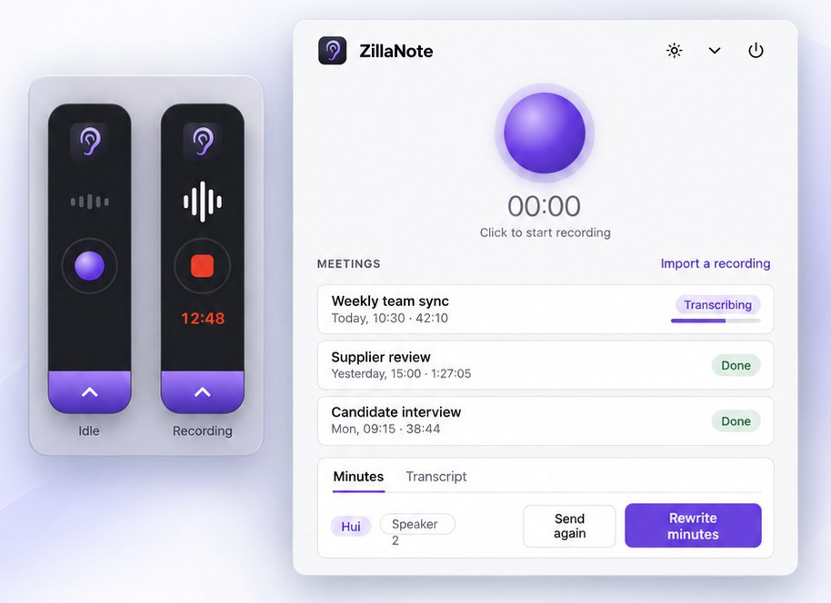

Meet.
Listen.
Done.
ZillaNote records your meeting, writes down who said what, and mails you the minutes. Your recordings stay on your computer.
ZillaNote runs on Mac and Windows. Open this page on your computer to download it.
Free and open source.
This Mac looks like it has an Intel processor. ZillaNote needs a Mac with Apple silicon (M1 or later).

Why ZillaNote
Your recordings stay yours
Audio is recorded and transcribed on your computer. It is never uploaded, and nothing is ever sent to the people who make ZillaNote.
Free, with no account
No sign-up and no subscription. The code is open under MIT or Apache-2.0: use it at home or at work, change it, share it.
Your model, your costs
The minutes come from the language model you choose: one on your own computer, free and private, or any OpenAI-compatible service with your own key.
Nothing to do afterwards
Press record when the meeting starts. The transcript, the speaker names and the minutes arrive by themselves, in the app and in your inbox.
Getting started
-
Install it
On a Mac, open the downloaded file and drag ZillaNote to Applications. The installer is not yet signed by a registered developer, so the first time you open it macOS stops it: open System Settings, then Privacy & Security, and choose Open Anyway.
On Windows, run the installer; it needs no administrator. Because it is not yet signed, Windows may say "Windows protected your PC": choose More info, then Run anyway.
-
Let it fetch the speech model
On the first start ZillaNote offers to download its speech model, 0.9 GB, once.
-
Choose who writes the minutes
In Settings, enter a language model: one on your computer, such as LM Studio or Ollama, or a hosted service with your key. Add a mail account if you want the minutes mailed to you. Then press record.